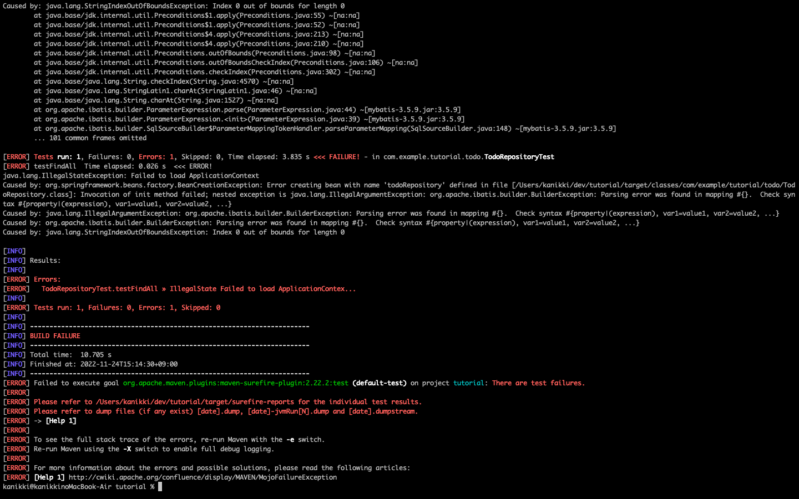

技統本塾活動メモ(舘)¶
やったこと¶
AWS WorkSpaceの設定
Eclipseを用いたSpringBoot環境構築
sphinxによるGithub Pagesの公開
- TERASOLUNAチュートリアル
ビルドエラーが発生して詰まったので途中まで。
- SpringBootチュートリアル
コーディング単体テスト以外の部分。
- Spring 入門 ～ SpringBoot 2 を使ってお問い合わせアプリとToDoアプリを作る～ (Udemy)
NTTDのJavaチュートリアルが自分と合わなかったので、より丁寧な教材をUdemyで見つけて学習を行った。
この教材が自分と合っていたので、SpringBootで簡素なウェブアプリのコーディングはできるようになりそう。
これからやること¶
Udemyの簡単な教材で最低限のSpringBootアプリを作れるようになる
AWSのチュートリアル
困りごと・所感¶
IDE(Eclipse)のパッケージエクスプローラ上ではエラーが検出されないのに、サーバーで実行するとビルドエラーが発生する。
ちょっとずつコードを書いてはこまめにビルドするのが良いのか。
単体テストを頑張れば、ビルド時のエラーは検出できるのか。

SpringBootチュートリアルつらい。
社内環境のため、ローカル開発環境へコードコピペできず、コードを写経していて手が疲れた。また、チュートリアルを終わらせることが目的になっている自分に気が付く。そもそも新しい言語やフレームワークを覚えるとき、みんなどうしてるが気になった。
学んだこと¶
Java: Javaナレッジ